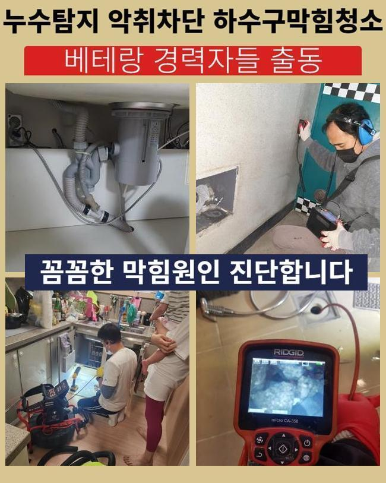
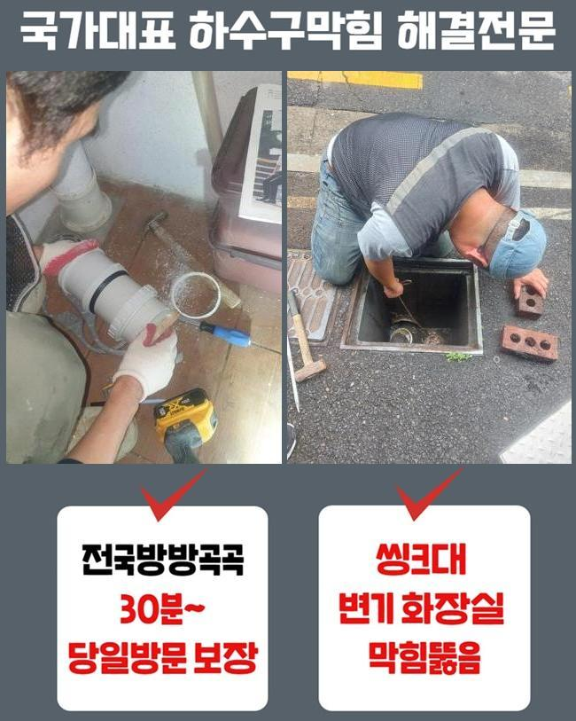
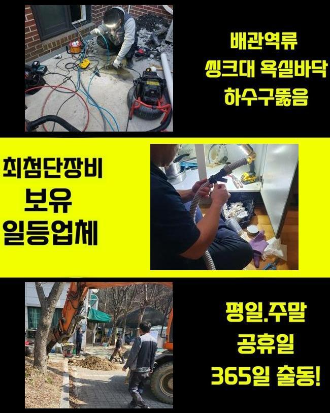
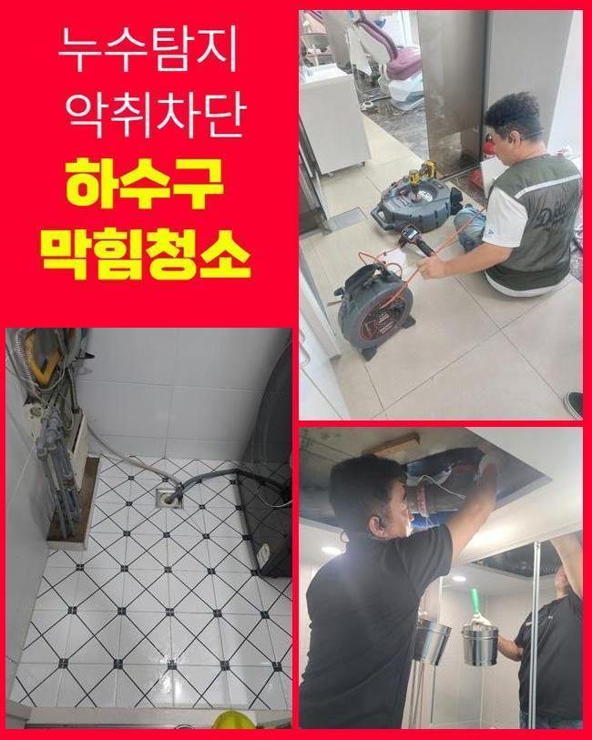
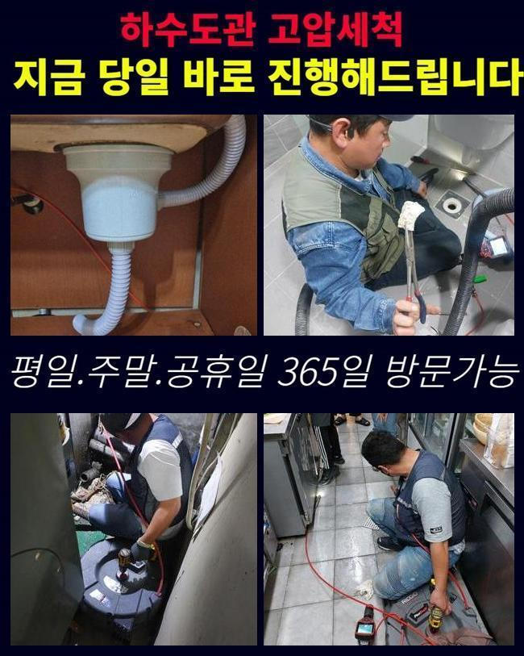
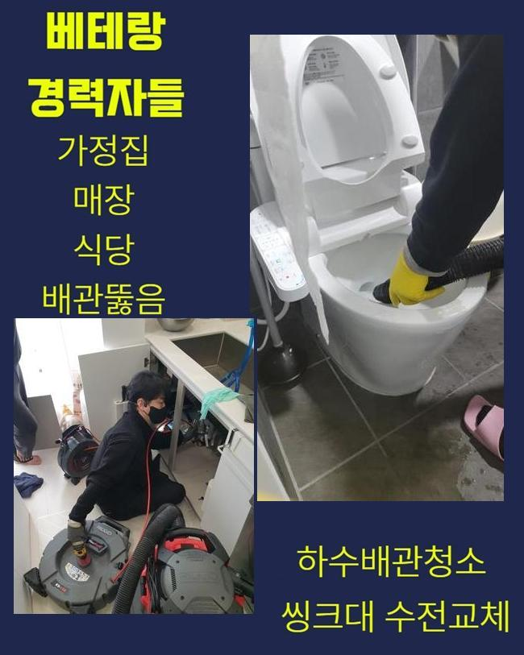
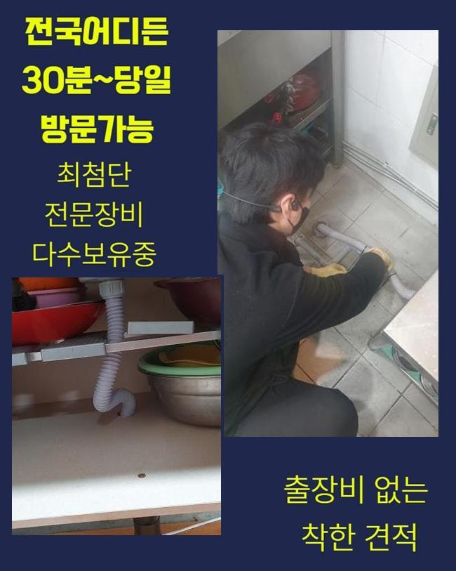

🏠 용인 죽전동싱크대배수구막힘 동천동 하수구청소 부속수리
용인 죽전 싱크대막힘 전문 시공 후기

📋 작업 개요
- 위치: 용인 죽전, 죽전, 용인
- 서비스 유형: 싱크대막힘, 하수구막힘, 배관막힘, 뚫는업체, 배관청소, 고압세척, 악취차단
- 작업 일시: 2025. 5. 14. 18:22
- 업체명: 하수구수사대 (010-5615-2118)
🔍 문제 상황
용인 죽전동싱크대배수구막힘 동천동 하수구청소 부속수리
저희측은 배수시스템과 연계된 여러가지 수선을 진행하고 있답니다
배관전문가가 상시적으로 업무대기하고 있고 의뢰인분이 직면하신 고장상황에 신속하게 조치해드립니다
금번엔 주방시설의 배수구막힘 해소 공정을 안내드리겠습니다
전주에 의뢰를 해주셨던 위치는 음식점이 모여있는 건물이었는데요
한 음식점의 배수문이 고장난 상황이었고 그것에 더하여 공용화장실 통수마저 제대로 안돼 문제가 되는 상황이었습니다
해당지역쪽에서 근무중이었던 담당자가 바로 이동하였으며 알맞은 방책을 실행하기로 하였죠
주방시설 배관막힘과 화장실쪽의 관로정체가 생긴곳은 닭백숙 식당이었는데요
개수대 부근에서는 여러 음식재료를 처리하기에 배수관정체가 흔히 일어난답니다
그렇기에 음식점을 하시는 분들은 그와 관계된 여러종류의 방책들을 행하고 있으시죠
평상시 조심스럽게 쓰셨더라도 갑작스럽게 단단한 물체가 들어간다면 정체가 생길수 있으므로 관리하기 어려운 측면도 있습니다
금번 내방한 곳은 어떠한 이유로 정체가 발현된건지 세밀하게 확인하도록 하겠습니다
일단 주방설비부터 점검하기로 했죠
음식점은 보통가정의 주방과 다르게 배수트렌치의 사이즈도 상당히 크죠

🔎 원인 분석
💡 전문가 진단: 정밀 진단 장비를 사용하여 슬러지의 고착 여부를 판명하고 타격/세척 작업을 실시했습니다.
그렇기 때문에 유입되는 배수량도 증가하게 되죠
따라서 일반적인 주거지의 배수성능 기준으로 이상여부를 결정내려서는 제대로된 파악이 어렵고 그것에 적합한 물의양을 넣어서 상태를 정밀하게 알아보는 것이 중요하답니다
해당 과정을 신밀히 시행하지 않는다면 몇달뒤에 물막힘이 다시 일어날수 있죠
조사를 해보았고 정상적으로 물빠짐이 안된다는걸 간파할수가 있었어요
찬찬히 빠지기는 했으나 식당운영을 재개하기엔 곤란한 형국이었죠
다음으론 배관안으로 배관내시경을 투입시켜 명확히 문제를 진단하기로 했어요
기름찌꺼기들과 미세한 석회성분들이 관로안을 메우고 있었죠
관로 안에 혼입되면 곤란한 물질들이 적체되어 문제가 생긴거예요
이것과 관련지어서 배관에 투입돼면 문제가 될것들에 대하여 말씀드리도록 하겠습니다
말씀드리는 사안들을 기억해두셨다가 일상에 적용해보시길 당부드려요
유분은 수돗물과 만나면 고착화되고 그로인해 관로에 눌어붙을 가망이 높답니다
그러므로 반드시 종이류로 처리하고 물세정을 하는것이 중요해요
부가적으로 기름분리수거 역시 습관적으로 활용하는게 합당합니다
요즘에 즐겨드시는 원두커피에서 발생되는 가루들도 하수도막힘을 야기할수 있죠
커피가루는 기름과 결합하는 특징이 있기에 배관속에서 뒤엉키기 쉽답니다

🔧 작업 과정
그러므로 일반쓰레기로 분류하여 처분하는게 바람직해요
조리하다가 그릇에 잔류하는 음식물을 개수대에 버린다면 배관면에 누증될 가망성이 크죠
다양한 양념성분은 크기가 작기에 거름망을 지나쳐 관로로 유입될수 있어 개별적으로 폐기하시는게 좋답니다
조리도중에 남게된 전분도 관로에 곧바로 폐기한다면 응축되어서 배수문제가 발발할수가 있겠죠
그러므로 이러한 것들은 필히 분리하여 배수설비를 깔끔하게 관리하는게 좋겠습니다
내시경기기를 활용하여 깊은층까지 조사하였더니 공용관로도 정체가 생겼으리라 추정하였고 별개로 진단하기로 결정합니다
일단 의뢰인분의 주방시설의 하수도 세척을 해야하겠죠
닭요리 위주로 조리를 하셔서 타시설물과 다르게 기름성분이 다량으로 누증된 상태였고 그외 음식쓰레기들까지 합쳐져 길목이 차단된 형국이었습니다
그것들이 오랫동안 잔류하면서 관로와 일체화되어버린 형국이었답니다
샤프트장비를 써서 이번에 방문한 곳의 초기 세척작업을 단행하게 되었습니다
부품들은 배관의 특성에 맞게끔 교체할때도 있으나 통상적으로 쇠줄로 만들어진 체인노커를 쓰곤하죠
나일론으로 피복된 금속케이블 끝단에 해당되는 체인노커가 결속되어서 배관안에 넣고 돌리면 고속으로 회전하면서 상존하는 하수관찌꺼기들을 가루처럼 부서뜨리는 기능을 해주죠
통상적으로 분쇄기를 가동시키면 이물들이 수월하게 탈락합니다
그러나 앞에서 설명드린대로 이지점은 공용관로까지 이물이 전이되었다는걸 알아낸바가 있죠
그러한 경우엔 가지배관 정비만으로 본원적인 문제점이 없어지지 않아요
세정된걸로 오인이 일어나기도 하지만 메인 관로가 막혔다면 몇주정도가 흐른다음에 다시금 하수관이 막혀버릴수 있습니다
가지배관 세척공정을 끝낸후에 지하기계실에 있는 공동관을 점검하기로 결정했어요
내시경기기를 투입하니 두텁게 누증된 검정색의 잔재들이 가득차 있었어요
장기간에 걸쳐 쌓인걸로 보였으며 사이즈도 방대하다보니 더욱더 수량이 방대해진거죠
그걸 고압물세정으로 처리하기로 결정내렸으며 3시간 넘게 시공을 시행했죠
메인관까지 분쇄청소를 끝내고 의뢰인의 식당으로 이동하여 배수구 물내림점검과 화장실까지 검점을 단행해보니 정말 깔끔하게 뚫음이 이루어져서 시원하게 빠져나갔답니다
금번 지점은 상당량의 기름성분과 석회물질들이 막힘의 사유라 볼수 있었고 건물의 메인관로까지 막혀있었기에 더더욱 사태가 심각했어요
그것들을 샤프트기기와 고압물세척으로 짜임새있게 처치하였으며 통수된 결과를 목도할수 있었죠
시공을 끝내고 차후 일어날수 있는 고장과 숙지해두면 유용한 관로보존 방책들을 설명해 드렸어요


✅ 작업 완료
귀가한뒤에 연락주신뒤 관련된 내용을 여쭤보셔서 살뜰하게 설명해 드렸어요
작업을 잘못 진행하면 몇달뒤 배수관에 고질적인 문제들이 일어날수가 있죠
그러므로 정확한 시공방식을 접목시켜 해결해내려는 스탠스가 중요합니다
그러므로 여러 변수를 염두에 두고 작업을 이행해야한다는 걸 안내드립니다
식당 등에서 급작스레 하수관이 막히면 영업을 못하는 상황이 될수 있답니다
그러니 미세하게나마 트러블이 목도되었다면 지연시키지말고 기술자에게 연락하시길 당부드립니다




⚠️ 주방 싱크대 배관 막힘 예방 수칙
- ✅ 기름기가 묻은 식기나 프라이팬은 설거지 전 키친타올로 반드시 기름때를 닦아내세요.
- ✅ 주기적으로 싱크대 개수대에 뜨거운 물을 가득 받아 한 번에 내려 배관 내부 기름을 씻어내세요.
- ✅ 배수구 거름망을 미세한 필터로 사용하시고 음식물 찌꺼기가 틈으로 새어 들지 않게 관리하세요.
- ✅ 베이킹소다와 식초를 뜨거운 물과 함께 일주일에 한 번씩 부어주면 배관 살균과 막힘 예방에 좋습니다.
💡 핵심 정리
- 확실한 장비 작업(내시경 점검 및 샤프트 스케일링)으로 원인을 뿌리 뽑습니다.
- 작업 후 1년 이내에 동일한 부위 재발 시 100% 무상 A/S 서비스를 보장합니다.
- 서울 · 경기 · 인천 전 지역에 24시간 언제든 긴급 출동할 수 있도록 항시 대기 중입니다.
❓ 자주 묻는 질문 (FAQ)
🚨 용인 죽전 싱크대막힘 문제로 고민이신가요?
정확한 원인 진단과 확실한 시공으로 재발 없는 해결을 약속드립니다.
24시간 긴급 출동 | 서울 · 경기 · 인천 전지역 | 1년 내 재발 시 무상 A/S